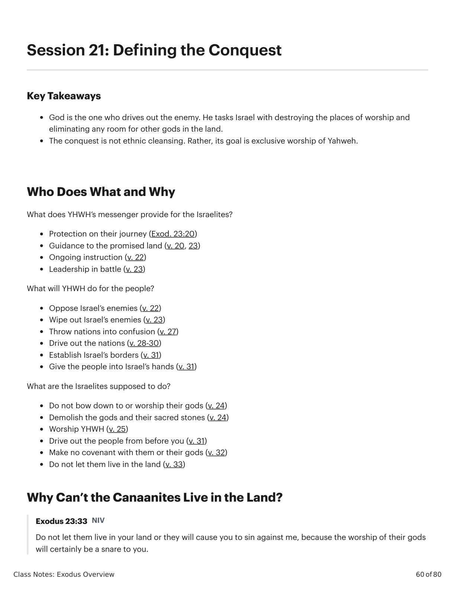

Sessão 21: Defining the ConquestSession 21: Defining the Conquest
\n
\n
Class Notes: Exodus Overview
60 of 80
Session 21: Defining the Conquest
Key Takeaways
God is the one who drives out the enemy. He tasks Israel with destroying the places of worship and
eliminating any room for other gods in the land.
The conquest is not ethnic cleansing. Rather, its goal is exclusive worship of Yahweh.
Who Does What and Why
What does YHWH’s messenger provide for the Israelites?
Protection on their journey (Exod. 23:20)
Guidance to the promised land (v. 20, 23)
Ongoing instruction (v. 22)
Leadership in battle (v. 23)
What will YHWH do for the people?
Oppose Israel’s enemies (v. 22)
Wipe out Israel’s enemies (v. 23)
Throw nations into confusion (v. 27)
Drive out the nations (v. 28-30)
Establish Israel’s borders (v. 31)
Give the people into Israel’s hands (v. 31)
What are the Israelites supposed to do?
Do not bow down to or worship their gods (v. 24)
Demolish the gods and their sacred stones (v. 24)
Worship YHWH (v. 25)
Drive out the people from before you (v. 31)
Make no covenant with them or their gods (v. 32)
Do not let them live in the land (v. 33)
Why Can’t the Canaanites Live in the Land?
Exodus 23:33 NIV
Do not let them live in your land or they will cause you to sin against me, because the worship of their gods
will certainly be a snare to you.
\n

���������������������������������������������������������������������������������������Êxodo X:Y. Tradução e Design Literário por Tim Mackie para BibleProject Classroom: José (2021).Exodus X:Y. Translation and Literary Design by Tim Mackie for BibleProject Classroom: Joseph (2021).
\n
Class Notes: Exodus Overview
61 of 80
The command to drive the Canaanites from the land is not about ethnic cleansing. The concern is exclusive
worship of YHWH (cf. Deut 7:1-6; 12:1-4).
Recommended Resource
Is God a Moral Monster?: Making Sense of the Old Testament God by Paul Copan
Reflection Question
According to the text, why must the Canaanites be barred from staying in the land alongside the Israelites?
\n